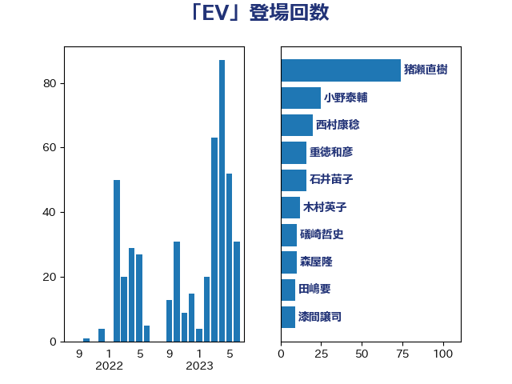

単語「EV」

| 小泉進次郎 | 自由民主党 | 69 回 |
| 重徳和彦 | 立憲民主党 | 16 回 |
| 藤川政人 | 自由民主党 | 11 回 |
| 柿沢未途 | 無所属 | 9 回 |
| 梶山弘志 | 自由民主党 | 9 回 |
| 漆間譲司 | 日本維新の会 | 9 回 |
| 西田昌司 | 自由民主党 | 9 回 |
| 工藤彰三 | 自由民主党 | 8 回 |
| 浅野哲 | 国民民主党 | 7 回 |
| 浜口誠 | 国民民主党 | 6 回 |
| 玉木雄一郎 | 国民民主党 | 5 回 |
| 礒崎哲史 | 国民民主党 | 5 回 |
| 鈴木敦 | 国民民主党 | 5 回 |
| 青山繁晴 | 自由民主党 | 5 回 |
| 伊藤孝恵 | 国民民主党 | 4 回 |
| 熊谷裕人 | 立憲民主党 | 4 回 |
| 福田達夫 | 自由民主党 | 4 回 |
| 上田清司 | 国民民主党 | 3 回 |
| 大西健介 | 立憲民主党 | 3 回 |
| 山崎誠 | 立憲民主党 | 3 回 |
| 山本左近 | 自由民主党 | 3 回 |
| 平山佐知子 | 無所属 | 3 回 |
| 森屋隆 | 立憲民主党 | 3 回 |
| 金子恭之 | 自由民主党 | 3 回 |
| 金村龍那 | 日本維新の会 | 3 回 |
| 山口壯 | 自由民主党 | 2 回 |
| 斉藤鉄夫 | 公明党 | 2 回 |
| 横山信一 | 公明党 | 2 回 |
| 河野義博 | 公明党 | 2 回 |
| 若松謙維 | 公明党 | 2 回 |
| 萩生田光一 | 自由民主党 | 2 回 |
| 青柳仁士 | 日本維新の会 | 2 回 |
| 串田誠一 | 日本維新の会 | 1 回 |
| 伊佐進一 | 公明党 | 1 回 |
| 佐藤英道 | 公明党 | 1 回 |
| 塩村あやか | 立憲民主党 | 1 回 |
| 大塚耕平 | 国民民主党 | 1 回 |
| 新妻秀規 | 公明党 | 1 回 |
| 横沢高徳 | 立憲民主党 | 1 回 |
| 渡辺猛之 | 自由民主党 | 1 回 |
| 片山さつき | 自由民主党 | 1 回 |
| 畦元将吾 | 自由民主党 | 1 回 |
| 石井拓 | 自由民主党 | 1 回 |
| 石井正弘 | 自由民主党 | 1 回 |
| 石川昭政 | 自由民主党 | 1 回 |
| 荒井優 | 立憲民主党 | 1 回 |
| 遠藤良太 | 日本維新の会 | 1 回 |
| 野田国義 | 立憲民主党 | 1 回 |
| 鬼木誠 | 立憲民主党 | 1 回 |
| 麻生太郎 | 自由民主党 | 1 回 |